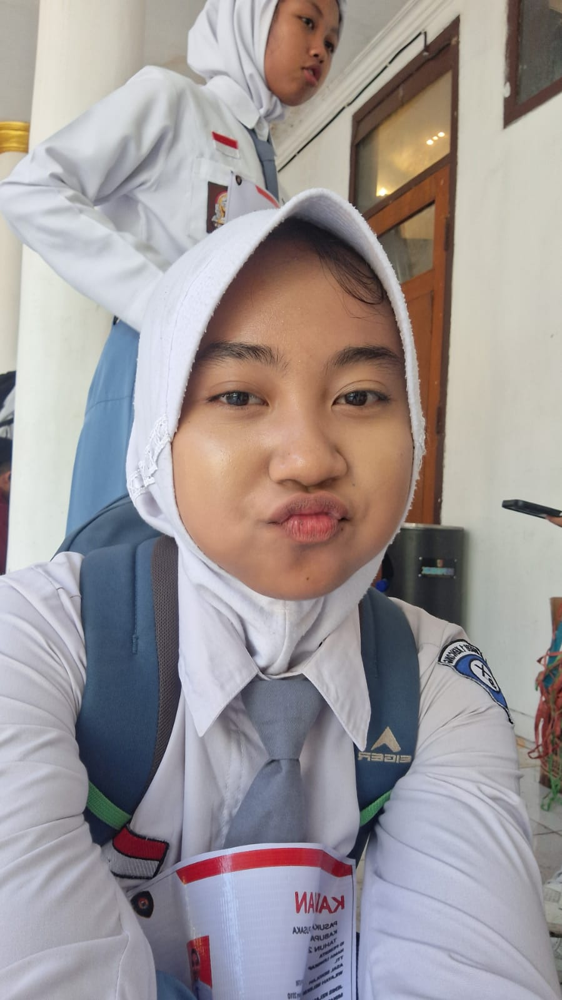

Lagu Buat Arnil Cantik 🎶
Maaf ya arnel kalo lagunya ga relate buat kamu, tapi ini aku pilih lagu nya yang bener bener cocok buat dirinya arnel.
🎵 Lagu pertama "Sempurna" kenapa? Ya karna arnel sempurna buat aku, anjay ga selebay itu juga sih tapi ya emang kamu itu sempurna tau.
🎵 Terus yang kedua "Somebody's Pleasure" kalo pas di play lagunya bisa nyambung atau cocok sama kenangan di website nya sih dan juga ini termasuk lagu favorit ku juga.
🎵 Buat lagu yang terakhir ini karena aku sering lihat arnel play lagunya di instastory ig jadi ya aku pilih deh, semoga suka ya.
Sempurna
Andra and the BackBone
Somebody's Pleasure
Aziz Hedra (Extended Version)
Terpukau
Astrid
Aku bangga banget sama kamu arnel 💫
Entah kenapa aku kepikiran buat masukin moment pas kamu masih seleksi, bangga aku sama kamu bener bener bangga udaa berani nyoba dan juga kepilih buat ke prov itu luar biasa banget bangga proud of you arnel.
Aku masukin foto ini biar kamu ga lupa sih terus juga ada yang meng apresiasi pas masih seleksi yap dan itu aku hahaha uda berapa bulan ya sekarang kamu uda resmi jadi paskibraka seneng banget aku liat kamu bisa masuk paskibraka dan juga aku bangga banget sama kamu, semoga kamu bisa terus berkembang dan juga bisa jadi yang terbaik buat kamu sendiri dan juga buat orang orang yang sayang sama kamu termasuk aku hehe.
Aku doain yang terbaik buat arnel semoga lancar ya semangatt semangatt arnell
Tanggal
14 Feb 2023
Lokasi
Coffee Shop

✨ Coba tekan fotonya

✨ Beautiful Arnil
Pecinta No 1 arnell bare face 💫
Hehe jujur aku suka banget liat arnel bare face CANTIKKKKKKKK BANGETTTTTTTT, demiii apapun CANTIKKKKK BANGETTTTTTT, aku masukin foto ini ya karna aku suka liat kamu yang yauda apa adanya dah kek terang terangan banget ngasih tau "nih loh aku kayak gini pas ga pake make up" yaaa tapi akuu tetep suka.
bukan berati kalo arnel pake make up ga cantikk, cantikk pake make up ga pake make up cantik cumaa kalo pas ke adaan nya kayak ginii kayak punya kesan tersendiri gituuu aaaaaaa
Tanggal
20 Feb 2023
Lokasi
Sunset Beach
Happy eid mubarak cintaa, masih inget ga? 💫
Pas hari raya idul fitri SENENGGGG BANGETTT AKUU, bahagia banget masih ada kamu yang nemenin aku di hari itu, di tambah lagi hari itu aku kerja terus setiap pulang ada yang nyariin kayak bener bener hidup lagi rasanya kamu juga masih manja manja nya pas itu "kak kapan pulang", "lama bangett pulangnya kak", "kak aku kangen kammu pulangnya kapan sih", lucuuu bangett hahaha.
selama puasa sampe hari raya happy banget, pas sahur pasti sama sama nyariin anjay lah jadi inget kan happy bangetttt, makasih ya arnel meskipun itu cuma di bilang ya sebentar tapi aku seneng banget.
semoga hari raya tahun depan masih bisa kabar kabaran sama kamu ya.
Tanggal
Setiap Hari
Lokasi
Di Hati Kita

Setiap kenangan kita
tersimpan di sini,
selamanya
Terima kasih sudah menjadi bagian dari hidupku. Setiap detik bersamamu adalah hadiah yang tak ternilai.
Made with ❤️ for us